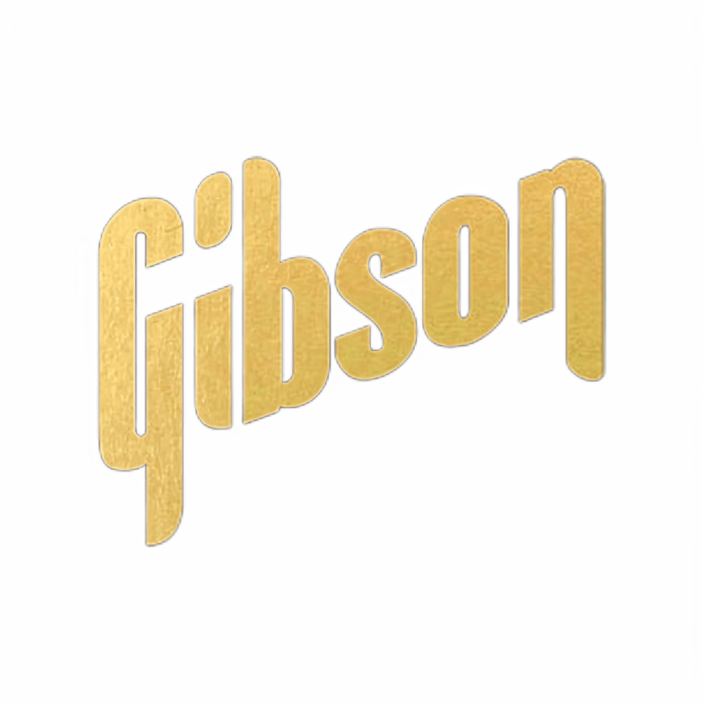

О компании Gibson
Орвилл Гибсон начал изготавливать инструменты в 1894 году и основал компанию в 1902 году как Gibson Mandolin-Guitar Mfg. Co. Ltd. в Каламазу, штат Мичиган, для производства инструментов семейства мандолин.[1] Гибсон изобрел арочные гитары, сконструировав такой же тип резных, арочных топов, которые использовались на скрипках. К 1930-м годам компания также производила акустические гитары флэттоп, а также одну из первых коммерчески доступных электрогитар с полым корпусом, которую использовал и популяризировал Чарли Кристиан. В 1944 году компания Gibson была куплена Chicago Musical Instruments (CMI), которая в 1969 году была приобретена панамским конгломератом Ecuadorian Company Limited (ECL), сменившим в том же году свое название на Norlin Corporation. С 1969 по 1986 год компания Gibson принадлежала Norlin Corporation. В 1986 году компания была приобретена группой во главе с Генри Юшкевичем и Дэвидом Х. Берриманом. В ноябре 2018 года компания была приобретена группой инвесторов во главе с частной инвестиционной компанией Kohlberg Kravis Roberts.